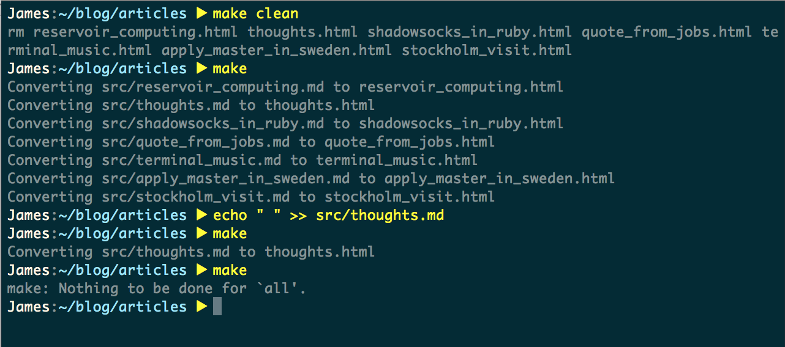

May 26, 2018

印象中我搭过三次博客，两次搭在了Github Pages上，分别使用了Jekyll和Hexo，不过那时候菜得要死，没什么好写的东西，也没能力去扩展现有的框架，不过搭建博客的过程还是让当时的我学到了一些东西。后来我买了服务器，搭了一个博客在上面，记过一些笔记，却一直没有给它配一个域名（因为不知道买哪个，选择困难晚期），后来那个博客也就不了了之。
这算是我第四次开博客了，不同的是我不再是当年的菜鸟了，有时候我真的觉得我有一些东西想和这个世界上的一些人分享 :)
这次的博客依然采用Markdown写作，我选择Pandoc将其转为HTML，并使用GNU Make来进行批量管理。这篇文章主要讲述我如何使用这三种工具来手动管理我的博客。
Markdown作为一种轻量级标记语言而被广大程序员所熟知，它简单明了，非常适合用在博客的写作上。它的语法简单，比如’#’可以用来指定标题的大小，# Header 1一般会被转化成<h1> Header 1 </h1>，## Header 2被转换成<h2> Header 2 </h2>，等等，我不打算在这里大谈Markdown的语法，具体语法可以参考这里。
Markdown的简单明了伴随着表达力不足的问题，但一般可以通过内嵌HTML的方式来解决。比如图片大小的设置，在Markdown中，如果要插入一副图片，语法是
可是问题在于标准的Markdown的语法并没有提供指定图片大小的方式，于是它就会默认使用图片的原大小，which is 非常不好的。事实上，我很少用这个语法，如果我想要引入一张图片，例如上面的题图，我会使用标准的HTML语法来引入
总而言之，我还是很喜欢Markdown的，我觉得它作为一个方便写作的标记语言还算是称职的，尽管有些标记符设计得有些问题。我无法要求它能表达所有HTML都能表达的东西，毕竟那样的话，Markdown就成了另一个HTML :)
Pandoc是一款由Haskell写成的，开源的通用文档转换工具，自称文档转换届的瑞士军刀（Pandoc官网上自己说的）。我从中挑了一把Markdown to HTML的小刀用了一下，发现这把刀真是异常锋利。
Pandoc的基础语法很简单，写完Markdown之后，使用以下命令将其转换为HTML文件，
// Converting test.md from (-f) markdown to (-t) html and output (-o) test.html
pandoc test.md -f markdown -t html -o test.htmlPandoc支持在Markdown文件中嵌入YAML，叫做yaml_metadata_block，顾名思义，这个是用来控制这个Markdown文件的Metadata的。YAML语法块以---开始，也以---结束，一般，我会在我的Markdown文件的YAML语法块中嵌入以下信息：
这些信息会被Pandoc所提取，并写在生成的HTML文件中，上面的语法块会被转化成以下代码：
<!-- 在head中增加以下代码 -->
<meta name="author" content="Jiahao Cai" />
<meta name="keywords" content="GNU Make, YAML, Pandoc, Markdown, HTML" />
<title>用Makefile管理blog</title>以及
<!-- 在body中增加以下代码 -->
<header>
<h1 class="title">用Makefile管理blog</h1>
<p class="author">Jiahao Cai</p>
</header>不过此时如果你用了我之前给的命令pandoc test.md -f markdown -t html -o test.html，你会发现转换出来的HTML并没有title／author／keyword，这是因为Pandoc默认只生成HTML fragment：
By default, pandoc produces a document fragment. To produce a standalone document (e.g. a valid HTML file including <head> and <body>), use the -s or –standalone flag
所以只要使用pandoc test.md -f markdown -t html --standalone -o test.html就可以生成完整的HTML文件了。
至此，如果你没有更多的需求，那么Markdown转HTML的部分已经结束了，上面的命令已经足够了。接下来讲的是如何通过一个外部的YAML文件在所有转换出的HTML文件中插入相同的内容，使用CSS美化生成的HTML文件以及如何插入\(\LaTeX\)。
上面所提到的YAML代码块一般都独立分布在各个Markdown文件中，毕竟每个文件的title都是不一样的。此时万一我有个通用的需求，所有的Markdown文件都需要满足，我是否可以将它抽离出来呢？Pandoc可以，我们可以通过一个外部的YAML文件来实现一个template。
我对所有的HTML文件都至少有如下需求：
我可以将这些要求单独放到一个YAML文件里，然后将Markdown文件作为source，YAML作为模板，共同生成每个HTML文件。根据上述的需求，我写了如下YAML文件（关于Pandoc中YAML支持的属性，请查看这里）：
---
lang: zh
header-includes:
<link rel="icon" href="../imgs/favicon.ico" type="image/x-icon"/>
<link rel="shortcut icon" href="../imgs/favicon.ico" type="image/x-icon" />
<meta name="viewport" content="width=device-width, initial-scale=1" />
<!-- Global site tag (gtag.js) - Google Analytics -->
<script async src="https://www.googletagmanager.com/gtag/js?id=UA-116308654-1"></script>
<script>
window.dataLayer = window.dataLayer || [];
function gtag(){dataLayer.push(arguments);}
gtag('js', new Date());
gtag('config', 'UA-116308654-1');
</script>
include-after:
<a style="color:black;font-size:2em;float:right;margin-right:30px;margin-bottom:40px;" href="../index.html">[Return to the homepage]</a>
---然后我们再加上一个参数template.yaml，指定模板来生成HTML文件
这样一来，我们就可以只修改template.yaml中的代码，然后将所有Markdown文件重新转换成HTML文件即可。听起来还是很复杂对吧，不要着急，我们可以用一个Makefile来简化这一切 :)
Pandoc也可以为生成的HTML文件来指定CSS，我使用的CSS是从Github Gist上找来的，地址在这里。使用方法很简单，加上--css style.css参数即可。现在我们的参数更复杂了，变成了
pandoc template.yaml test.md -f markdown --css style.css -t html --standalone -o test.html写Markdown的同时也会有要写LaTeX的需求，比如我在Reservoir computing简介里写的那些公式。Pandoc也支持在Markdown中插入LaTeX公式，使用方法很简单，就跟真正的LaTeX中Math mode一样，可以在两个$之间或者两个$$之间插入公式。
$$
\boldsymbol{r}(t + \Delta t) = (1 - \alpha)\boldsymbol{r}(t) + \alpha\tanh(\boldsymbol{Ar}(t) + \boldsymbol{W}_{in}\boldsymbol{u}(t) + \xi 1)
$$ 会被转化成
\[ \boldsymbol{r}(t + \Delta t) = (1 - \alpha)\boldsymbol{r}(t) + \alpha\ tanh(\boldsymbol{Ar}(t) + \boldsymbol{W}_{in}\boldsymbol{u}(t) + \xi 1) \]
使用LaTeX需要加入--mathjax参数，此时我们的命令变成了
pandoc template.yaml test.md -f markdown --css style.css -t html --standalone --mathjax -o test.html终于到了Makefile了，下面我们要做的就是写一个Makefile简化上述所有的流程，我现在使用的是GNU Make。Makefile还有个优势就是，当所有目标文件都生成之后，再次执行Makefile时，当且仅当目标文件的依赖文件被修改过时，目标文件才会被重新生成，如下图所示。此处我make之后，只修改了thoughts.md，于是下次make的时候，便只生成目标文件thoughts.html了。
关于Makefile的语法，我这里还是不多说了，这语法并不是很友好，很多不好的遗留的设计，单独写出来估计能写本小册子了，我就偷个懒，直接把我的Makefile贴在这里了。总之，用了它之后，我可以专心写Markdown，写完就make或者make clean就完事了，还是挺方便的。虽然之前折腾得挺多，不过我就喜欢折腾 :)
CSS = ../style.css
FLAG = --standalone --mathjax
SRC = src
TEMPLATE = template.yaml
MD = \
reservoir_computing\
thoughts\
shadowsocks_in_ruby\
quote_from_jobs\
terminal_music\
apply_master_in_sweden\
stockholm_visit\
my_blog_management
HTML = $(MD:%=%.html)
all: $(HTML)
%.html: $(SRC)/%.md $(TEMPLATE) $(CSS)
@echo Converting $< to $@
@pandoc $(TEMPLATE) $< -f markdown --css $(CSS) -t html $(FLAG) -o $@
clean:
rm $(HTML)
我把博客文章的目录结构也贴在这里，方便大家理解上面的Makefile
. ├── Makefile ├── apply_master_in_sweden.html ├── my_blog_management.html ├── quote_from_jobs.html ├── reservoir_computing.html ├── shadowsocks_in_ruby.html ├── stockholm_visit.html ├── terminal_music.html ├── thoughts.html ├── src │ ├── apply_master_in_sweden.md │ ├── my_blog_management.md │ ├── quote_from_jobs.md │ ├── reservoir_computing.md │ ├── shadowsocks_in_ruby.md │ ├── stockholm_visit.md │ ├── terminal_music.md │ └── thoughts.md └── template.yaml
RSS (Rich Site Summary 或 Really Simple Syndication) 是一种网站主动提供的服务，使用一种标准化的格式来描述网站的更新情况，从而使得用户可以轻易地订阅一个网站，即定时地从该网站的RSS源获取信息。这种主动提供服务的好处就是用户不必经常通过访问网站来了解该网站是否有更新，更新在何处，用户可以通过RSS阅读器来第一时间获取网站的更新。
RSS一般由一个XML文件来表达，它并没有一个官方的标准，我这里使用的是Atom。
一个简单的Atom feed如下所示：
<?xml version="1.0" encoding="utf-8"?>
<feed xmlns="http://www.w3.org/2005/Atom">
<!-- 以下是有关网站的全局描述 -->
<title>Ground Oddity</title>
<link href="http://jujuba.me/"/>
<updated>2018-06-29T18:30:02Z</updated>
<author>
<name>Jiahao Cai</name>
</author>
<updated>2018-06-29T22:06:42.669707+08:00</updated>
<id>http://jujuba.me/</id>
<!-- 以下是对entry的描述，一个entry代表博客中的一篇文章 -->
<entry>
<title>用Makefile管理blog</title>
<link href="http://jujuba.me/posts/my-blog-management.html"/>
<id>http://jujuba.me/posts/my-blog-management.html</id>
<published>Apr 11, 2018</published>
<updated>2018-06-29T18:30:02Z</updated>
<summary>...</summary>
</entry>
</feed>由于我的所有HTML文件都在同一文件夹下（posts/），所以我只需将该文件夹下的所有HTML文件都打开解析并提取我需要的内容即可。这里我写了个Python脚本来解决问题，主要使用BeautifulSoup这个库来解析一下HTML。
这里有个问题就是published和updated这两个选项如何获取的问题。在之前的设置中，我一直没有这个需求，所有文章中并未包含关于本文章的写作时间及最后一次更新时间等信息，直到现在要写RSS Feed才发现，这里我们可以通过改一下Pandoc的HTML的模板来解决这个问题，我的Pandoc模板文件位于/usr/local/Cellar/pandoc/2.2.1/share/x86_64-osx-ghc-8.4.2/pandoc-2.2.1/data/templates/default.html5，同时，也可以通过pandoc -D html来查看当前模板的内容。
打开之后，可以在该文件中添加如下自定义变量（自定义变量的使用可参考此处）：
$if(last_modified)$
<meta name="last_modified" content="$last_modified$" />
$endif$
$if(date)$
<meta name="published" content="$date$" />
$endif$我们可以通过传入last_modified和date两个变量来控制生成的HTML，这两个变量不仅可以通过我们之前提到的YAML文件来传入，更可以通过Shell来传入，这就十分方便了。回顾之前写的Makefile，我们可以将FLAG改为：
这样一来，每次生成新的HTML文件时，Makefile就自动将临时生成的时间戳（如2018-06-30T09:58:26Z）传入文件，免去了手动配置之苦。
最后贴上我的RSS生成器代码：
#! /usr/bin/env python3
# -*- coding: utf-8
import os
import arrow
path = './posts/'
html_names = list(filter(lambda x: x[-5:] == '.html', (os.listdir(path))))
rss_preamble = "<?xml version=\"1.0\" encoding=\"UTF-8\" ?>"
rss_head = """
<feed xmlns="http://www.w3.org/2005/Atom">
<title>Ground Oddity</title>
<link href="http://jujuba.me/"/>
<link href="http://jujuba.me/feed.xml" rel="self"/>
<id>http://jujuba.me/</id>
"""
rss_head += "<updated>" + str(arrow.now()) + "</updated>\n"
rss_tail = '</feed>'
rss_body = ''
try:
from BeautifulSoup import BeautifulSoup
except ImportError:
from bs4 import BeautifulSoup
for html_name in html_names:
with open(path + html_name, 'r') as html:
parsed_html = BeautifulSoup(html.read().encode('utf-8'), "html5lib")
rss_body += '<entry>'
title = parsed_html.body.find('h1', attrs={'class':'title'}).text
rss_body += '<title>' + title + '</title>'
published = parsed_html.find('meta', attrs={'name':"published"}).get("content")
rss_body += '<published>' + published + '</published>'
updated = parsed_html.find('meta', attrs={'name':"last_modified"}).get("content")
rss_body += '<updated>' + updated + '</updated>'
url = 'http://jujuba.me/posts/' + html_name
rss_body += '<link href="' + url + '"/>'
rss_body += '<id>' + url + '</id>'
rss_body += '<author> <name>Jiahao Cai</name> </author>'
contents = str(parsed_html.body).replace('<body>', '').replace('</body>', '')
rss_body += '<summary type="html">' + '<![CDATA[ ' + contents[0:500] + ' ]]>' + '</summary>'
rss_body += '<content type="html">' + '<![CDATA[ ' + contents + ' ]]>' + '</content>'
rss_body += '</entry>'
with open('atom.xml', 'w') as feed:
feed.write(rss_preamble)
feed.write(rss_head)
feed.write(rss_body)
feed.write(rss_tail)这些都解决了之后，要将博客文件传送到服务器上，怎么传送是个问题。如果每次都将全部文件重新传一遍，肯定是太慢了，特别从国内往国外服务器传文件的时候，根本受不了，这里我使用rsync这个工具来传送文件。rsync会在传输之前将服务器端的文件与本地文件做一个对比，然后只传输被修改过的文件，不仅如此，rsync还可以使用-z参数将文件在传输过程中打包，大大提高了传输速度。
在Makefile中增加以下内容：
接下来就可以直接通过make sync来将我的博客同步到服务器端了。
Update:
我把我的博客开源了，你可以在这里找到它。
(The End)
[Return to the homepage]